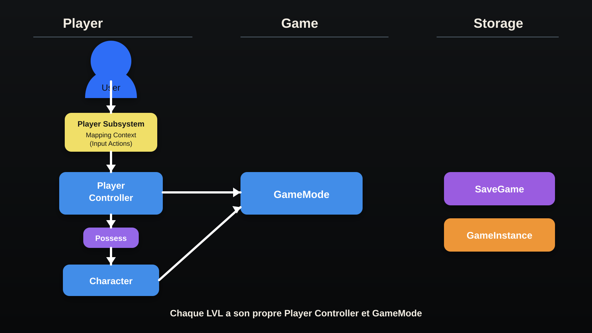
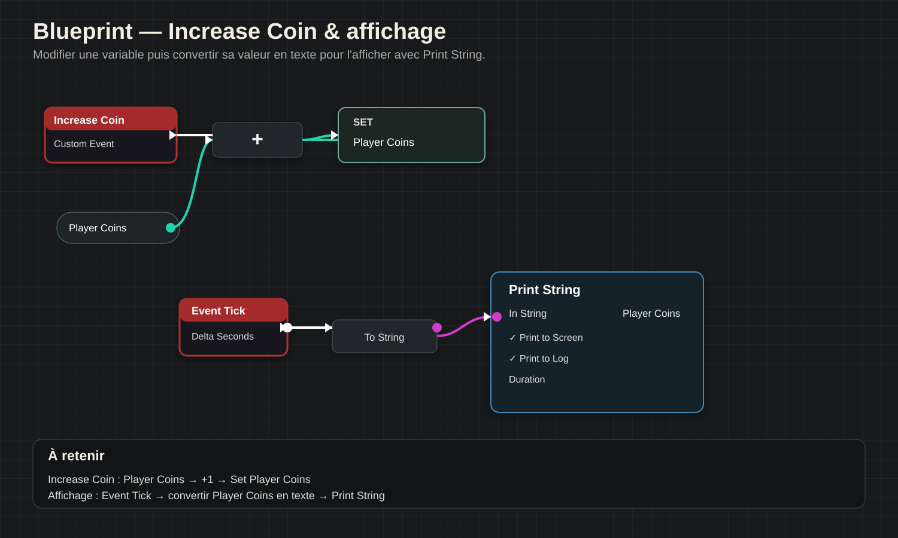
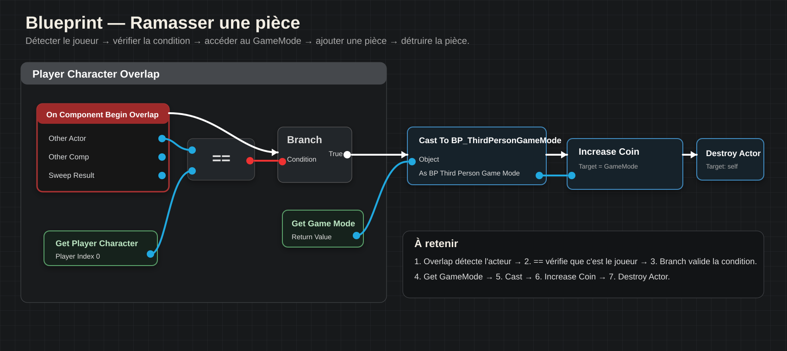

A
Notions
Les notions importantes seront regroupées ici au fur et à mesure de l'ajout de tes cours.
Cours, outils, workflows et notions autour d'Unreal Engine.
Les notions importantes seront regroupées ici au fur et à mesure de l'ajout de tes cours.
Les méthodes, étapes et workflows à retenir pourront être ajoutés sous forme de fiches courtes.
Cette zone servira à condenser les définitions, règles, raccourcis et points importants.
À compléter avec tes notes.
À compléter avec tes notes.
À compléter avec les exemples, œuvres, outils ou ressources.
À compléter avec les points à mémoriser.
Activer l'option de Snap pour faciliter le placement et le déplacement des objets.
F — Snapper / cadrer sur l'objet. Alt — Bouger autour de l'objet snappé.
Shift — Déplacer avec l'objet.
Alt + bouger — Dupliquer l'objet pendant son déplacement.
Active l'outil de translation pour déplacer un objet sur les axes.
Active l'outil de rotation.
Active l'outil de mise à l'échelle.
Alterne entre les principaux modes de transformation : Move, Rotate et Scale.
Cadre la sélection dans le viewport pour la retrouver rapidement.
Orbite autour du point de vue dans le viewport.
Zoom avant / arrière dans le viewport.
Déplace la vue (pan) dans le viewport.
Déplace la caméra librement dans le viewport.
Active le mode Game View dans le viewport.
Duplique rapidement un objet pendant son déplacement.
Permet de déplacer la vue en même temps que l'objet sélectionné.
Duplique l'objet sélectionné.
Supprime l'objet ou l'élément sélectionné.
Sauvegarde le niveau ou l'asset courant.
Annule la dernière action.
Rétablit l'action annulée.
Ouvre la recherche rapide d'assets et de contenus.
Crée une zone de commentaire dans un graphe Blueprint lorsque le graphe est actif.
W = déplacer · E = tourner · R = scaler · F = cadrer · Alt + déplacement = dupliquer · Ctrl + D = dupliquer · Delete = supprimer · Ctrl + S = sauvegarder · Ctrl + Z = annuler.
0 / 1 — valeur binaire.
0.01 — nombre décimal.
1 — nombre entier.
text code — texte destiné au code.
text user — texte destiné à l'utilisateur.
X Y Z — position / direction en 3 axes.
X Z Y — valeurs de rotation.
3 × X Y Z — Location, Rotation, Scale.

Flux général : l'utilisateur agit via le système d'Input, le Player Controller contrôle le joueur, puis le Character est possédé par ce controller. Le GameMode définit les règles et classes utilisées par le niveau.
Entrées utilisateur / Input Actions.
Reçoit et gère les actions du joueur.
Le Controller prend le contrôle du Character.
Personnage contrôlé dans le niveau.
Règles du jeu et classes par défaut du niveau.
Permet de conserver des données pendant la session du jeu.
À retenir : chaque niveau possède son propre Player Controller et son propre GameMode.

Increase Coin est un événement personnalisé qui augmente la variable Player Coins.
Player Coins = Player Coins + 1Event Tick s'exécute régulièrement. La valeur de Player Coins est convertie en texte puis envoyée à Print String pour être affichée à l'écran.
Déclenche la chaîne d'exécution.
Valeur numérique à afficher.
Transforme le nombre en texte.
Affiche le résultat à l'écran et/ou dans le log.

Cette logique combine l'Overlap avec le GameMode pour donner une pièce au joueur.